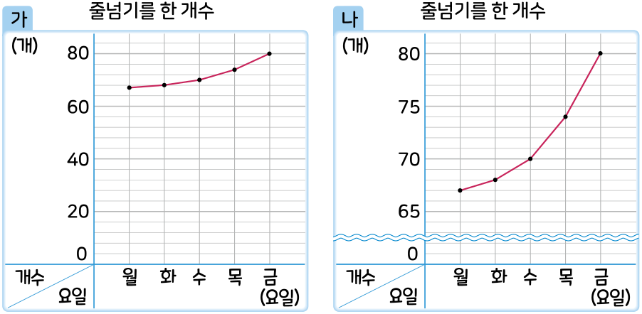

5. 자료와 꺾은선그래프
꺾은선그래프를 알아볼까요(2)
전개
수학
112
쪽
수학 익힘
80
쪽
은하가 양발 모아 뛰기로 줄넘기를 한 개수를 두 꺾은선그래프로 나타냈습니다. 두 그래프를 비교해 봅시다.

두 그래프의 같은 점과 다른 점은 각각 무엇인가요?
같은 점:
예
가로는 요일을 나타내고 세로는 개수를 나타냅니다.
다른 점:
예
세로 눈금 한 칸이
가
그래프는 4개를 나타내고
나
그래프는 1개를 나타냅니다.
나
그래프에는 물결선이 있습니다.
나
그래프와 같이 물결선()을 사용해서 나타내면 어떤 점이 좋을까요?
예
필요 없는 부분을 생략해서 나타내기 때문에 변화하는 모습이
가
그래프보다 잘 나타납니다.